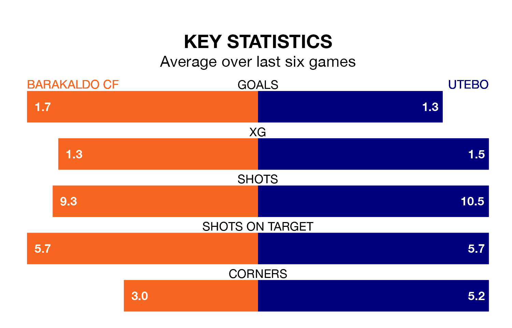

Barakaldo CF host Utebo at Ciudad Deportiva de San Vicente del Raspeig on Sunday on the back of six consecutive wins in Segunda División RFEF Group 2.
It means Barakaldo have picked up the maximum 18 points from their last six games, and they face an Utebo side who have lost their last two matches, and collected nine points from the last possible 18.
Barakaldo are second in the table after 19 games, of which they have won 12 and drawn six, earning 42 points.
Utebo are three places behind the hosts in fifth, with 10 wins and six draws putting them on 36 points.
With 30 goals in 19 games so far this season, Barakaldo are scoring more than average in the league with 1.6 goals per game. And they are conceding fewer than average, letting in 11 goals at a rate of 0.6 per game.
The away team are also above average scorers, with 1.3 goals per game, compared to a league average of 1.1. They have conceded 1.0 goal per game.
Barakaldo's last match was on January 21, a 1-0 win against Arenas de Getxo.
Utebo drew 0-0 with Athletic Club B last time out, also on Sunday.
Updated: 09:07 (UTC), 24/01/24